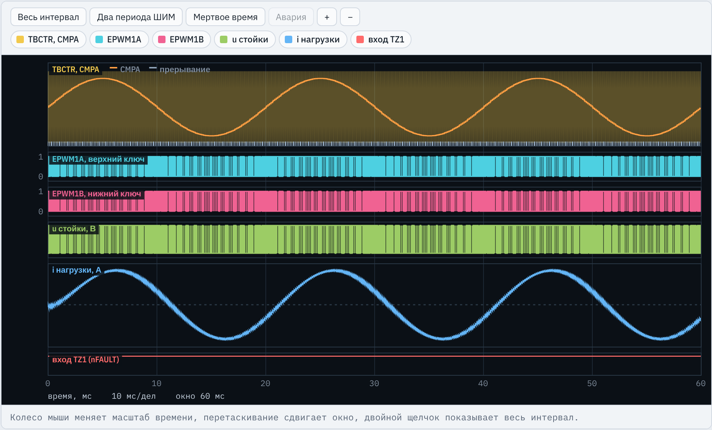
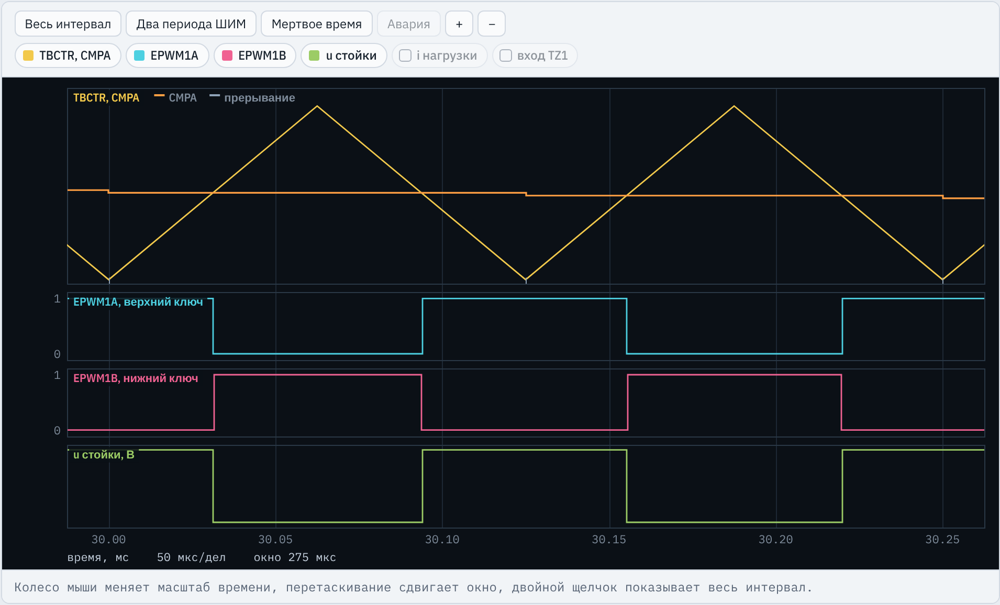
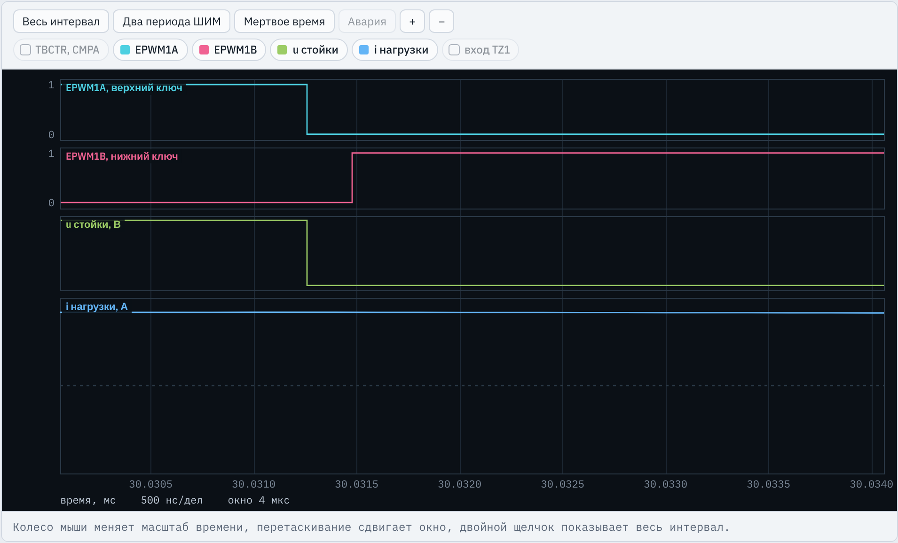
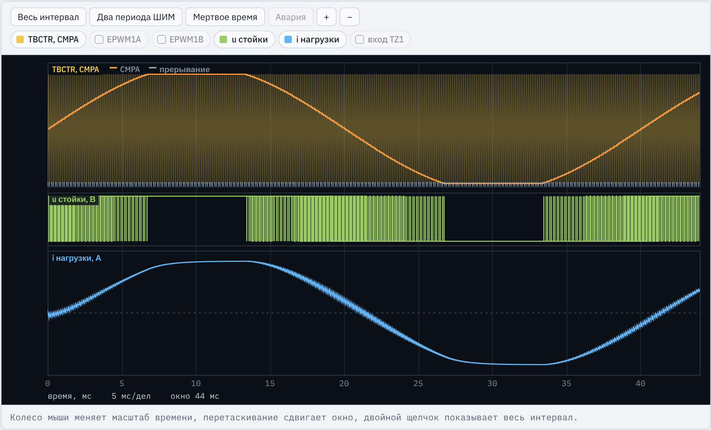
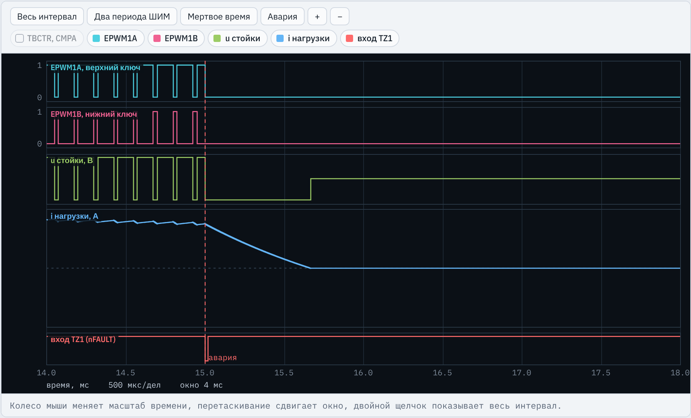
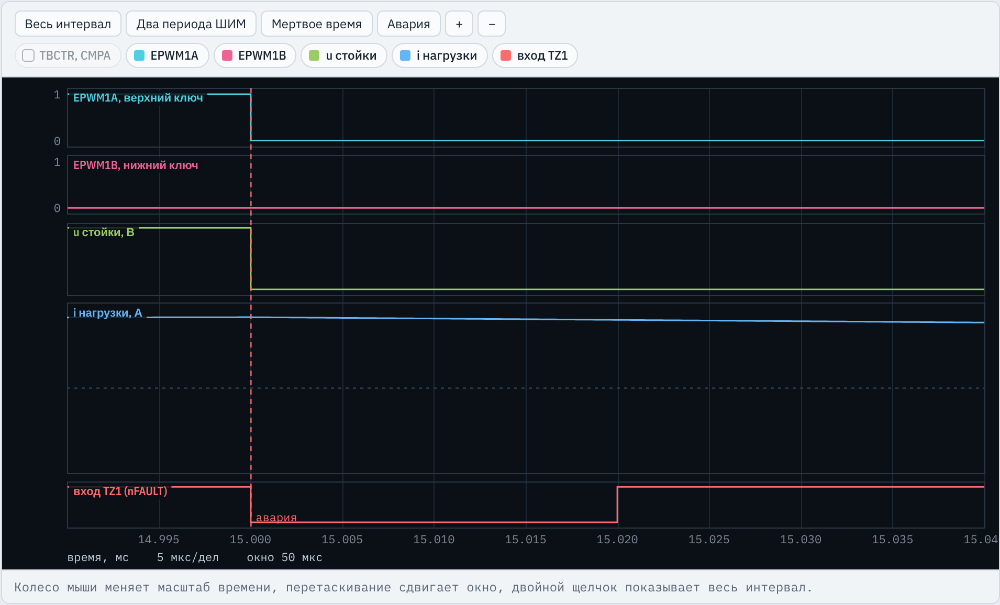
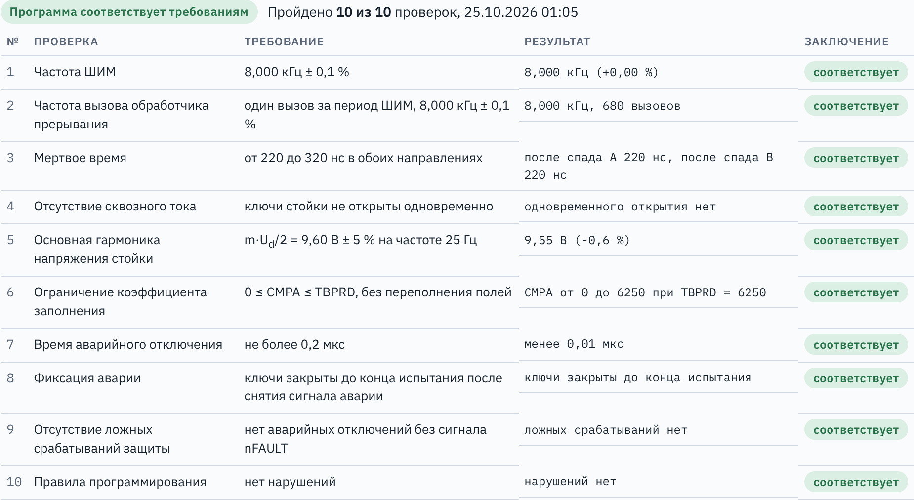

TMS320F2837xD · ЛАБОРАТОРНАЯ РАБОТА № 1
Вводное занятие курса и лабораторная работа № 1: ШИМ, мертвое время, аварийное отключение и прерывание модуля ePWM микроконтроллера TMS320F2837xD
Введение
Микроконтроллер замыкает все контуры: тока, скорости, положения и защиты.
Стенд C2000 · ЛР1. Управляющие импульсы стойки инвертора
2 / 29
Введение
событие счетчика ePWM: начало периода
токи, напряжение, положение: АЦП, eQEP
регуляторы, преобразования координат, ограничения
коэффициент заполнения: запись CMPA
аварии и режимы; завершить обработчик
Цикл повторяется каждый период ШИМ: при 8 кГц — 8000 раз в секунду, на весь расчет меньше 125 мкс. Поэтому то, что должно происходить точнее и быстрее программы, делает периферия реального времени.
импульсы формирует аппаратура с шагом 10 нс; программа раз в период меняет уставку
преобразование запускает ePWM в заданный момент периода, вдали от переключений
отключение ключей за десятки наносекунд без участия программы
обработчик вызывается событием периферии, а не опросом в цикле
Стенд C2000 · ЛР1. Управляющие импульсы стойки инвертора
3 / 29
Введение
Частоту и заполнение ШИМ, мертвое время, вид защиты, законы и коэффициенты регулирования, порядок пуска, останова и реакции на аварию. Силовая схема при этом не меняется.
Стенд C2000 · ЛР1. Управляющие импульсы стойки инвертора
4 / 29
Введение
счетчик, сравнение, мертвое время, аварийное отключение в каждом модуле; такт 100 МГц (ЛР1)
четыре модуля A–D, в курсе 12 бит; запуск преобразования от ePWM (ЛР2)
модули eQEP1–eQEP3: счет импульсов энкодера и интервалов между ними (ЛР4)
компараторы с 12-разрядными ЦАП уставок, отключение через TZ без программы (ЛР9)
SYSCLK 200 МГц, вычисления в float с аппаратной плавающей точкой (FPU)
контроллер прерываний: обработчик вызывается событием периферии
Вся периферия, нужная приводу, — на одном кристалле. Программы пишутся на заголовочных файлах C2000Ware и переносятся в Code Composer Studio без изменения.
Стенд C2000 · ЛР1. Управляющие импульсы стойки инвертора
5 / 29
Введение
| № | Работа | Что добавляется в программу |
|---|---|---|
| 1 | Формирование управляющих импульсов стойки инвертора | ePWM: ШИМ, мертвое время, аварийное отключение, прерывание |
| 2 | Измерение тока стойки инвертора | АЦП с запуском от ePWM, калибровка нуля, пересчет кода в ток |
| 3 | Контур тока двигателя постоянного тока | ПИ-регулятор тока, H-мост с однополярной ШИМ |
| 4 | Контур скорости двигателя постоянного тока | eQEP, измерение скорости по энкодеру, регулятор скорости |
| 5 | Частотное управление асинхронным двигателем насоса | закон U/f, векторная ШИМ трехфазного инвертора |
| 6 | Векторное управление синхронным двигателем с постоянными магнитами | регулирование токов в системе координат ротора |
| 7 | Сервопривод с синхронным двигателем с постоянными магнитами | контуры положения и скорости, прямые связи |
| 8 | Идентификация параметров синхронного двигателя и автоматическая настройка регуляторов | опыты R, Ld, Lq, J, потокосцепления; расчет регуляторов |
| 9 | Аппаратная токовая защита инвертора на компараторах CMPSS | компараторы, цифровой фильтр, отключение через TZ |
| 10 | Комплексные приемочные испытания сервопривода | все вместе: векторное управление, настройка, позиционирование, защита |
Стенд C2000 · ЛР1. Управляющие импульсы стойки инвертора
6 / 29
Введение
Программа на C та же, что для кристалла. Стенд C2000 моделирует периферию и силовую часть.
| Стенд C2000 | Реальный стенд | Что это дает |
|---|---|---|
| редактор app.c, кнопка «Копировать для CCS» | проект Code Composer Studio на C2000Ware | один и тот же текст программы |
| модель кристалла: регистры по полям, значения после сброса, защита EALLOW, шаг 10 нс | TMS320F2837xD на плате | те же ловушки, что на кристалле |
| модель силовой части: стойка с диодами, нагрузка, двигатели | инвертор, двигатель, механизм | ошибка ничего не сжигает |
| окно сообщений со строкой программы | только поведение привода | причина ошибки видна сразу |
| осциллограф, вкладки «Регистры», «Переменные» | осциллограф на выводах, окна Registers и Expressions | внутренние сигналы видны без отладчика |
| вкладка «Приемка»: испытания И1–И10, протокол | стенд-измеритель и протокол испытаний | результат проверяется по требованиям, а не на глаз |
Стенд C2000 · ЛР1. Управляющие импульсы стойки инвертора
7 / 29
Лабораторная работа № 1
Первая работа: программа управления одной стойкой инвертора пишется на модуле ePWM1 и остается основой всех следующих работ.
main() с порядком инициализации, обработчик с синусоидальным заданием, интерфейсные переменныеCMPA; с ЛР5 — три стойки трехфазного инвертораРазработка программы формирования управляющих импульсов стойки инвертора напряжения на TMS320F2837xD и исследование влияния мертвого времени и ограничения коэффициента заполнения на выходное напряжение стойки.
Стенд C2000 · ЛР1. Управляющие импульсы стойки инвертора
8 / 29
Инженерная задача
Открыт VT1: uA0 = +Ud/2
точка A подключена к положительной шине
Открыт VT2: uA0 = −Ud/2
точка A подключена к отрицательной шине
Оба закрыты: напряжение задает диод
i > 0: ток через VD2, −Ud/2; i < 0: ток через VD1, +Ud/2
Оба открыты: сквозной ток
звено замкнуто накоротко, ключи выходят из строя за единицы микросекунд
Среднее за период ШИМ: ūA0 = (D − 1/2)·Ud, D = CMPA/TBPRD. Вариант 1: Ud = 24 В, R = 3,4 Ом, L = 4,5 мГн.
Стенд C2000 · ЛР1. Управляющие импульсы стойки инвертора
9 / 29
Что делает студент
| Задание | Где | Что написать |
|---|---|---|
| 1 | #define | FSW_HZ, TBPRD_VAL: расчет периода по частоте ШИМ варианта |
| 2 | #define, InitEPwm1() | DEADBAND_TCK; модуль DB: DBCTL, DBRED, DBFED |
| 3 | #define, InitFaultInput(), InitEPwm1() | FAULT_GPIO; вход с подтяжкой, INPUT1SELECT; TZCTL, TZSEL, TZCLR |
| 4 | InitEPwm1Gpio() | GPAPUD, GPAMUX1 для GPIO0 и GPIO1 |
| 5–7 | InitEPwm1() | счетчик TBCTL, TBPRD; теневой CMPA; действия AQCTLA |
| 8 | InitEPwm1(), epwm1_isr() | ETSEL, ETPS; в конце обработчика ETCLR и PIEACK |
| 9 | epwm1_isr() | ограничение duty диапазоном от 0 до 1 |
Результат. Протокол приемки «10 из 10», расчет TBPRD и мертвого времени, исследование. Заготовка собирается, но испытания не проходит.
Стенд C2000 · ЛР1. Управляющие импульсы стойки инвертора
10 / 29
Структура программы
такт 200/100 МГц, сторожевой таймер выключен
InitEPwm1Gpio(), InitFaultInput()
DINT, InitPieCtrl(), вектор EPWM1_INT
TBCLKSYNC = 0, InitEPwm1(), TBCLKSYNC = 1
IER, PIEIER3, EINT; цикл for(;;)
Выделено то, что заполняет студент. Порядок задан требованием безопасности: импульсы не появляются, пока не настроены мертвое время и защита.
фаза, duty, ограничение, CMPA, затем ETCLR и PIEACK
счетчики всех ePWM стоят на время настройки и запускаются одновременно
работа: импульсы и прерывания; авария: оба выхода в 0 до сброса флага OST
Стенд C2000 · ЛР1. Управляющие импульсы стойки инвертора
11 / 29
Программа · задания 1–3
lr1_reference.c, определения (вариант 1)
#define FSW_HZ 8000.0f
fШИМ = 8,0 кГц по варианту. Через TS = 1/FSW_HZ задает шаг фазы в обработчике
#define TBPRD_VAL 6250
Счет вверх-вниз: TШИМ = 2·TBPRD·TTBCLK, TBPRD = 108 / (2·8000) = 6250
#define DEADBAND_TCK 22
tdt ≥ 1,2·[(87 − 14) + (180 − 70)] = 219,6 нс, вверх до такта: 220 нс = 22 такта по 10 нс
#define FAULT_GPIO 14
Выход nFAULT драйвера подключен к GPIO14: открытый сток, внешнего резистора нет
#define TS (1.0f / FSW_HZ)
Дано. Если меняется частота ШИМ, меняются и FSW_HZ, и TBPRD_VAL, иначе f1 будет неверной (И5)
Стенд C2000 · ЛР1. Управляющие импульсы стойки инвертора
12 / 29
Программа · задания 4 и 3
InitEPwm1Gpio(), InitFaultInput()
EALLOW; GpioCtrlRegs.GPAPUD.bit.GPIO0 = 1; GpioCtrlRegs.GPAPUD.bit.GPIO1 = 1; GpioCtrlRegs.GPAMUX1.bit.GPIO0 = 1; GpioCtrlRegs.GPAMUX1.bit.GPIO1 = 1; EDIS;
По умолчанию выводы работают как GPIO, и импульсы до драйверов не доходят. MUX = 1: GPIO0 → EPWM1A, GPIO1 → EPWM1B. Подтяжка на выходах не нужна. Без EALLOW запись молча не выполняется
EALLOW; GpioCtrlRegs.GPADIR.all &= ~(1UL << FAULT_GPIO); GpioCtrlRegs.GPAPUD.all &= ~(1UL << FAULT_GPIO); InputXbarRegs.INPUT1SELECT = FAULT_GPIO; EDIS;
Бит 14 в GPADIR = 0: вход. Бит 14 в GPAPUD = 0: подтяжка включена, иначе вход плавает и помехи дают ложные отключения. INPUT1SELECT = 14: GPIO14 становится входом TZ1
Стенд C2000 · ЛР1. Управляющие импульсы стойки инвертора
13 / 29
Программа · задания 5 и 6
InitEPwm1(), подмодули TB и CC
EPwm1Regs.TBPRD = TBPRD_VAL; EPwm1Regs.TBCTR = 0; EPwm1Regs.TBCTL.bit.CTRMODE = TB_COUNT_UPDOWN; EPwm1Regs.TBCTL.bit.PHSEN = TB_DISABLE; EPwm1Regs.TBCTL.bit.PRDLD = TB_SHADOW;
Счетчик 0…6250…0, период 125 мкс; импульсы симметричны. Синхронизация фазы для одной стойки не нужна. Новый период вступает в силу при TBCTR = 0
EPwm1Regs.TBCTL.bit.HSPCLKDIV = TB_DIV1; EPwm1Regs.TBCTL.bit.CLKDIV = TB_DIV1;
fTBCLK = 100 МГц. После сброса HSPCLKDIV = /2 (TBCTL = 0x0083): без записи ШИМ 4 кГц вместо 8
EPwm1Regs.CMPCTL.bit.SHDWAMODE = CC_SHADOW; EPwm1Regs.CMPCTL.bit.LOADAMODE = CC_CTR_ZERO; EPwm1Regs.CMPA.bit.CMPA = TBPRD_VAL / 2;
Обработчик пишет CMPA в теневой регистр, в рабочий он переходит при TBCTR = 0: нет лишних и пропущенных импульсов. Начально D = 0,5
Стенд C2000 · ЛР1. Управляющие импульсы стойки инвертора
14 / 29
Программа · задания 7 и 2
InitEPwm1(), подмодули AQ и DB
EPwm1Regs.AQCTLA.bit.CAU = AQ_CLEAR; EPwm1Regs.AQCTLA.bit.CAD = AQ_SET;
TBCTR = CMPA на счете вверх — сброс, на счете вниз — установка. A = 1, пока TBCTR < CMPA: D = CMPA/TBPRD
EPwm1Regs.DBCTL.bit.IN_MODE = DBA_ALL; EPwm1Regs.DBCTL.bit.OUT_MODE = DB_FULL_ENABLE; EPwm1Regs.DBCTL.bit.POLSEL = DB_ACTV_HIC;
Оба выхода строятся из сигнала A, задержка на обоих. DB_ACTV_HIC: B — инверсия A. С DB_ACTV_HI сигнал B копирует A: сквозной ток (И3, И4)
EPwm1Regs.DBRED.bit.DBRED = DEADBAND_TCK; EPwm1Regs.DBFED.bit.DBFED = DEADBAND_TCK;
DBRED задерживает фронт A, DBFED — спад входа, который после инверсии становится фронтом B. Пауза 220 нс при обоих переключениях
Проверка: кнопка «Мертвое время» на осциллографе, вкладка «Измерения» — 0,220 мкс в обоих направлениях, сквозного тока нет. Допуск испытания И3: от 220 до 320 нс.
Стенд C2000 · ЛР1. Управляющие импульсы стойки инвертора
15 / 29
Программа · задание 3
InitEPwm1(), подмодуль TZ
EALLOW; EPwm1Regs.TZCTL.bit.TZA = TZ_FORCE_LO; EPwm1Regs.TZCTL.bit.TZB = TZ_FORCE_LO;
При аварии оба выхода в 0: оба ключа закрыты, ток спадает через обратные диоды. Регистры TZ защищены
EPwm1Regs.TZSEL.bit.OSHT1 = 1;
Источник TZ1, однократное отключение: выходы остаются выключенными до программного сброса TZFLG.OST. CBC1 вернул бы импульсы в следующем периоде (И8)
EPwm1Regs.TZCLR.bit.OST = 1; EPwm1Regs.TZCLR.bit.INT = 1; EDIS;
Сброс флагов до пуска счетчиков: программа начинает работу без зафиксированной аварии
Отключение выполняет аппаратура, без участия программы, за десятки наносекунд. Требование И7: не более 0,2 мкс.
Стенд C2000 · ЛР1. Управляющие импульсы стойки инвертора
16 / 29
Программа · задание 8
InitEPwm1(), main(), конец epwm1_isr()
EPwm1Regs.ETSEL.bit.INTSEL = ET_CTR_ZERO; EPwm1Regs.ETSEL.bit.INTEN = 1; EPwm1Regs.ETPS.bit.INTPRD = ET_1ST;
Запрос при TBCTR = 0 на каждом событии: один вызов за период ШИМ, 8000 вызовов в секунду (И2)
IER |= M_INT3; // дано в main()
PieCtrlRegs.PIEIER3.bit.INTx1 = 1;
EINT;Путь запроса: флаг ETFLG.INT, разрешение в PIE PIEIER3.INTx1, группа 3 в IER, глобальное EINT
EPwm1Regs.ETCLR.bit.INT = 1; PieCtrlRegs.PIEACK.all = PIEACK_GROUP3;
Пока ETFLG.INT = 1, модуль не дает новых запросов; без PIEACK PIE не пропускает группу 3. Без любой строки обработчик выполнится один раз
Стенд C2000 · ЛР1. Управляющие импульсы стойки инвертора
17 / 29
Программа · задание 9
epwm1_isr()
theta += TWO_PI * f_out * TS; if (theta >= TWO_PI) theta -= TWO_PI;
Дано. Приращение фазы 2π·f1·TШИМ; при 25 Гц — 320 вызовов на период f1
duty = 0.5f + 0.5f * m_index * sinf(theta);
Дано. D = 1/2 + (m/2)·sin θ, среднее uA0 = (m·Ud/2)·sin θ
if (duty > DUTY_MAX) duty = DUTY_MAX; if (duty < DUTY_MIN) duty = DUTY_MIN;
Пишет студент. При m > 1 коэффициент D выходит за 0…1; отрицательное значение после (Uint16) становится большим положительным, стойка переключается на целый период
EPwm1Regs.CMPA.bit.CMPA = (Uint16)(duty * TBPRD_VAL); isr_count++;
Дано. Запись в теневой CMPA, действует с начала следующего периода; isr_count — число вызовов
Стенд C2000 · ЛР1. Управляющие импульсы стойки инвертора
18 / 29
Осциллограф
m_index = 0,8 и f_out = 50 Гц — начальные значения переменных; Ud = 24 В, R = 3,4 Ом, L = 4,5 мГн.

TBCTR, CMPA — счетчик ePWM1 (480 периодов сливаются в заливку), оранжевая линия — уставка CMPA по синусу 50 Гц, отметки внизу — вызовы обработчика
EPWM1A, EPWM1B — сигналы верхнего и нижнего ключа, 0 или 1
u стойки — напряжение точки A относительно средней точки звена, ±12 В
i нагрузки — ток R-L нагрузки, А: синусоида 50 Гц с пульсациями частоты ШИМ
вход TZ1 — уровень nFAULT высокий: аварии нет
«Измерения»: 8,000 кГц, мертвое время 0,220 мкс в обе стороны, 480 вызовов, U1m = 9,55 В, I1m = 2,59 А.
Стенд C2000 · ЛР1. Управляющие импульсы стойки инвертора
19 / 29
Осциллограф

TBCTR, CMPA — треугольник 0…6250…0, период 125 мкс; ступенька CMPA меняется только при TBCTR = 0, там же отметки прерывания
EPWM1A — 1, пока TBCTR < CMPA; фронты — в точках пересечения
EPWM1B — инверсия A с паузами
u стойки — +12 В при открытом VT1, −12 В при открытом VT2
Импульс A симметричен относительно TBCTR = 0, середина паузы — при TBCTR = TBPRD. Кнопка «Два периода ШИМ».
Стенд C2000 · ЛР1. Управляющие импульсы стойки инвертора
20 / 29
Осциллограф

EPWM1A — спад около 30,0313 мс: VT1 закрывается
EPWM1B — фронт на 220 нс (22 такта) позже: VT2 открывается
u стойки — падает вместе со спадом A: ток положителен и сразу переходит в диод VD2
i нагрузки — ток выше нуля, за 4 мкс почти не меняется
При i > 0 потеря возникает на другом переключении: напряжение растет только с фронтом A, на 220 нс позже. Ошибка Ud·tdt·fШИМ ≈ 0,042 В, основная гармоника ≈ 0,054 В.
Стенд C2000 · ЛР1. Управляющие импульсы стойки инвертора
21 / 29
Осциллограф · режим B

TBCTR, CMPA — CMPA упирается в TBPRD = 6250 (около 7–13 мс) и в 0 (около 27–33 мс): работает ограничение
u стойки — в эти интервалы ключи не переключаются: постоянно +12 В или −12 В
i нагрузки — вершины тока уплощены, провалов нет
f1 = 25 Гц, 44 мс. И6: CMPA от 0 до 6250, переполнений поля нет. Вкладка «Приемка», кнопка «B: задание с перемодуляцией».
Стенд C2000 · ЛР1. Управляющие импульсы стойки инвертора
22 / 29
Осциллограф · режим C

вход TZ1 — импульс низкого уровня nFAULT 20 мкс, отметка «авария»
EPWM1A, EPWM1B — оба выхода в 0 сразу после фронта nFAULT и до конца испытания (25 мс)
u стойки — −12 В, пока ток идет через VD2
i нагрузки — спадает до нуля примерно за 0,7 мс под действием напряжения звена
Импульс давно закончился, а ключи закрыты: однократное отключение зафиксировано (И8). Кнопка «Авария».
Стенд C2000 · ЛР1. Управляющие импульсы стойки инвертора
23 / 29
Осциллограф · режим C

вход TZ1 — низкий уровень с 15,000 до 15,020 мс
EPWM1A — спад в тот же момент: время отключения менее 0,01 мкс (И7: не более 0,2 мкс)
EPWM1B — остается 0: нижний ключ не включается
u стойки, i нагрузки — напряжение сразу −12 В, ток плавно уменьшается
Программа в отключении не участвует: обработчик не вызывался, выходы перевел модуль TZ. После окончания импульса выходы остаются в 0.
Стенд C2000 · ЛР1. Управляющие импульсы стойки инвертора
24 / 29
Приемочные испытания
Режимы: A — номинальный (m = 0,8, f1 = 25 Гц, 85 мс, помехи на входе аварии); B — m = 1,15, 44 мс; C — импульс nFAULT 20 мкс при 15 мс, 25 мс.
| № | Проверка | Требование | Режим | Что подтверждает |
|---|---|---|---|---|
| И1 | Частота ШИМ | 8,000 кГц ± 0,1 % | A | TBPRD и делители записаны верно |
| И2 | Вызовы обработчика | один за период ШИМ ± 0,1 % | A | такт системы работает: ETCLR и PIEACK на месте |
| И3 | Мертвое время | 220…320 нс в обоих направлениях | A | пауза есть и не больше необходимой |
| И4 | Сквозной ток | ключи не открыты одновременно | A, B, C | звено не замыкается ни в одном режиме |
| И5 | Основная гармоника u | 9,60 В ± 5 % на 25 Гц | A | напряжение задается верно: m, f1, TS |
| И6 | Ограничение заполнения | 0 ≤ CMPA ≤ TBPRD | B | нет переключения на целый период |
| И7 | Время отключения | не более 0,2 мкс | C | защита аппаратная, через TZ1 |
| И8 | Фиксация аварии | ключи закрыты до конца | C | однократное, а не циклическое отключение |
| И9 | Ложные срабатывания | нет без сигнала nFAULT | A | подтяжка и INPUT1SELECT настроены |
| И10 | Правила программирования | нарушений нет | A, B, C | EALLOW/EDIS, ETCLR, PIEACK, переменные, фоновый цикл |
Стенд C2000 · ЛР1. Управляющие импульсы стойки инвертора
25 / 29
Приемочные испытания

Вкладка «Приемка»: фамилия, группа, вариант, кнопка «Провести испытания». Для каждой проверки — требование варианта, измеренное значение и заключение.
Кнопками режимов A, B, C любой опыт выводится на осциллограф. «Сохранить протокол» дает документ с контрольной суммой SHA-256 текста программы: любое изменение текста меняет сумму.
Стенд C2000 · ЛР1. Управляющие импульсы стойки инвертора
26 / 29
Типовые ошибки
| Ошибка | Что происходит | Проверки |
|---|---|---|
Не записан HSPCLKDIV | после сброса /2: ШИМ 4 кГц, мертвое время 440 нс | И1, И2, И3, И5 |
POLSEL = DB_ACTV_HI | B копирует A, ключи открываются одновременно | И3, И4 |
| Мертвое время с запасом, 1 мкс | лишнее искажение напряжения | И3 |
| Нет подтяжки на входе nFAULT | вход плавает, помехи отключают ключи | И9 |
Не записан INPUT1SELECT | TZ1 подключен к GPIO0, то есть к EPWM1A | И3, И9 |
CBC1 вместо OSHT1 | после импульса nFAULT ключи снова включаются | И8 |
TZSEL без EALLOW | запись не выполнена, защиты нет | И7, И8, И10 |
Нет ограничения duty | CMPA выходит за 0…TBPRD | И6 |
TS не пересчитан при смене частоты | f1 отличается от заданной | И5 |
Нет ETCLR или PIEACK | обработчик вызван один раз | И2, И5, И10 |
Стенд C2000 · ЛР1. Управляющие импульсы стойки инвертора
27 / 29
Исследование
CBC1 вместо OSHT1, испытания, описание выходов после импульса nFAULT в режиме C; затем вернуть однократное отключение12 опытов на исходном тексте стенда: одна строка меняется, программа запускается. Сначала прогноз, затем осциллограф, сообщения и регистры. Например: «Делитель после сброса», «Полярность мертвого времени», «Флаг прерывания ePWM», «Подтверждение PIE», «Защита EALLOW», «Перемодуляция».
Стенд C2000 · ЛР1. Управляющие импульсы стойки инвертора
28 / 29
Порядок выполнения
#defineduty; проверить при m_index = 1.15fСтенд C2000 · ЛР1. Управляющие импульсы стойки инвертора
29 / 29